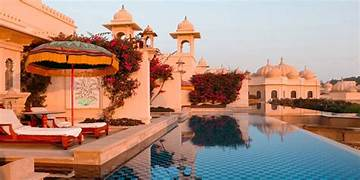
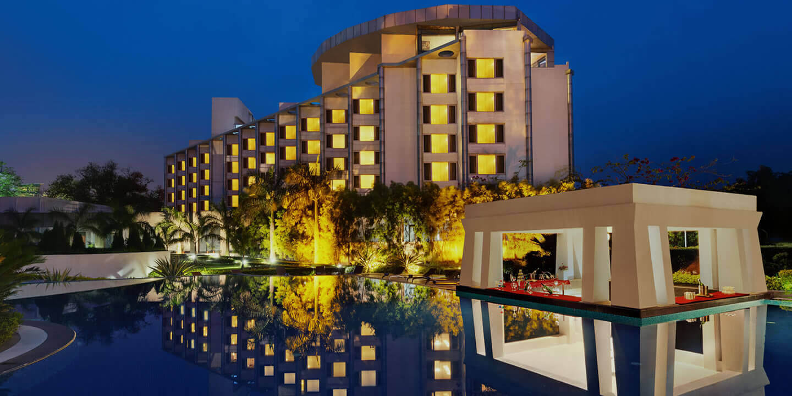

Varanasi

Varanasi
— the City of Spirituality
Varanasi is not just a city—it is a living prayer. Here, time slows down on the steps of ancient ghats, where the Ganga flows like a sacred hymn, carrying stories of faith, life, and liberation. Temple bells echo in the air, lamps float like stars on water, and every sunrise feels like a blessing reborn. In Varanasi, life and eternity meet, and the soul learns to listen.
Places to Visit
Kashi Vishwanath Temple
The heart of Varanasi.
One of the 12 Jyotirlingas of Lord Shiva, this sacred temple fills the air with devotion,
bells, and timeless faith. A visit here feels like touching eternity.

Dashashwamedh Ghat
amous for the grand Ganga Aarti,
this ghat comes alive every evening with lamps, chants,
and spiritual energy reflected in the holy river..
Assi Ghat
Peace meets tradition.
A calmer ghat, perfect for sunrise views, yoga, and boat rides, where the Ganga whispers serenity and mornings feel divine.
Hotels in Varanasi
| Image | Hotel Name | Location | Category | Details |
|---|---|---|---|---|
|  | Taj Najeder plalace | Raja Bazar Rd, opp. Taksal Cinema Hall, Nadesar, Chaukaghat, Varanasi, Uttar Pradesh 221002, India | 5 Star | Luxury rooms, rooftop pool, near varanasi ghat |
|  | BrijRama Palace, Varanasi | By the Ganges | Darbhanga Ghat on the banks of the Ganges (Ganga) — right in the heart of spiritual Varanasi. | 5 Star | Modern hotel, fine dining,nature views |